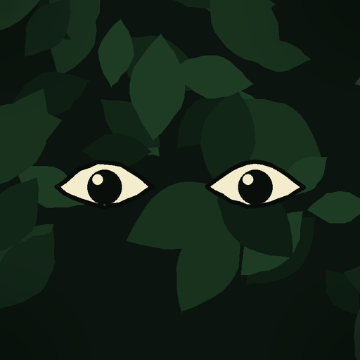

Mata Densa
Histórias curtas e verdadeiras sobre a natureza, a história e os golpes que marcaram o Brasil e o mundo.
Somos um estúdio independente de vídeos educativos em português. Cada vídeo parte de uma pesquisa com fontes citadas na descrição, usa fotos de acervo em domínio público ou licença livre e é narrado pelo criador. Já são 17 vídeos no ar em três canais.
Nossos canais

Mata Densa
Bichos, plantas e fungos do Brasil: onde vivem, como se escondem e o que fazer quando você cruza com um.

Passado Censurado
A parte da história do Brasil que o livro da escola pula: inventores esquecidos, cidades abandonadas, decisões que ninguém conta.
YouTube @passadocensurado · TikTok @passadocensurado · ver vídeos

Golpes e Dinheiro
Os maiores golpes da história, contados passo a passo, para você reconhecer o truque quando ele aparecer de novo.
Vídeos recentes
 8:07O golpista que vendeu a Torre Eiffel duas vezes e enganou Al Capone28/09/2026
8:07O golpista que vendeu a Torre Eiffel duas vezes e enganou Al Capone28/09/2026 1:05Uma vez por semana, a preguiça desce da árvore27/09/2026
1:05Uma vez por semana, a preguiça desce da árvore27/09/2026 1:11Em 1800, um físico italiano inventou a pilha elétrica27/09/2026
1:11Em 1800, um físico italiano inventou a pilha elétrica27/09/2026 1:02Em janeiro de 1493, Cristóvão Colombo anotou no diário que viu três sereias27/09/2026
1:02Em janeiro de 1493, Cristóvão Colombo anotou no diário que viu três sereias27/09/2026 1:09A palavra fotografia foi usada primeiro no interior de São Paulo27/09/2026
1:09A palavra fotografia foi usada primeiro no interior de São Paulo27/09/2026 1:03Em 1900, um padre fez a voz de alguém atravessar oito quilômetros de São Paulo.27/09/2026
1:03Em 1900, um padre fez a voz de alguém atravessar oito quilômetros de São Paulo.27/09/2026 1:05Em 1822, um escocês vendeu terras num país que não existia27/09/2026
1:05Em 1822, um escocês vendeu terras num país que não existia27/09/2026 1:10O homem que deu nome ao golpe da pirâmide morreu pobre no Rio de Janeiro27/09/2026
1:10O homem que deu nome ao golpe da pirâmide morreu pobre no Rio de Janeiro27/09/2026In English
Mata Densa is a small independent studio in Brazil that makes short educational videos in Portuguese about Brazilian wildlife, Brazilian history and famous frauds, published on three YouTube and TikTok channels. Our own tool, matadensa publisher, uploads the videos we produce to our own accounts.